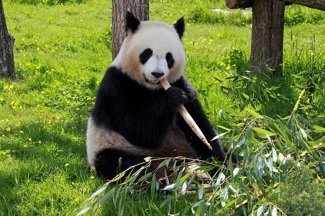

Az óriáspanda (Ailuropoda melanoleuca), eredeti rendszertani nevén Ursus melanoleuca (fekete-fehér medve), vagy bambuszmedve a medvefélék (Ursidae) családjába tartozó emlős. Elterjedése csak maradványfoltokra korlátozódik Közép- és Dél-Kínában.

Az óriáspanda táplálékának 98%-a bambusz, bár méz, tojás, hal, jamszgyökér és egyéb is szerepel az étlapján. Könnyedén felismerhető a szemét, fülét és kerek testét körülvevő nagy fekete foltjairól.
A WWF jeleként és általában az állatvédelem jelképeként világszerte ismertté vált.
Az óriáspanda elterjedési területe mindössze 5900 km², amely magában foglalja Szecsuan, Kanszu és Sanhszi kínai tartományok hegyvidéki területeit. Az óriáspanda természetes élőhelyei a sűrű erdővel benőtt szubtrópusi hegyoldalak. Itt él nyáron 2700–4000 méter magasságig, télen alacsonyabbra vándorol, gyakran 800 méteres magasságig. Élettere általában nedves és csapadékban gazdag; a nyár hűvös, a tél hideg.